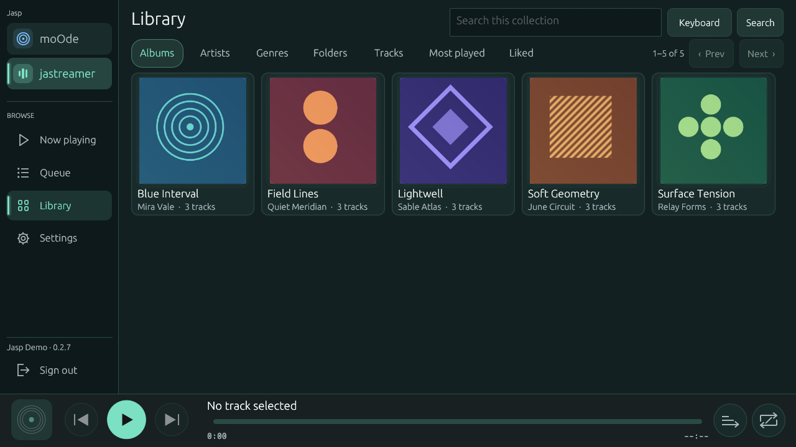

JASTREAMER CLIENT · RASPBERRY PI
The native jastreamer player for Raspberry Pi
Jasp is a native Raspberry Pi player for your existing jastreamer Server. Browse your library, manage the queue, and play music through the USB DAC connected to your Pi.
Library and queue


How it fits your setup
- Server and player
- jastreamer Server hosts the library and queue. Jasp connects to it; it does not replace the Server.
- Local USB audio
- Connect a USB DAC to the Pi. Configure network outputs in the jastreamer web interface. See the installation guide for supported source formats.
- Optional moOde UI
- On a Pi already running moOde, Jasp can replace the local web player without replacing the moOde backend, MPD, or its library.